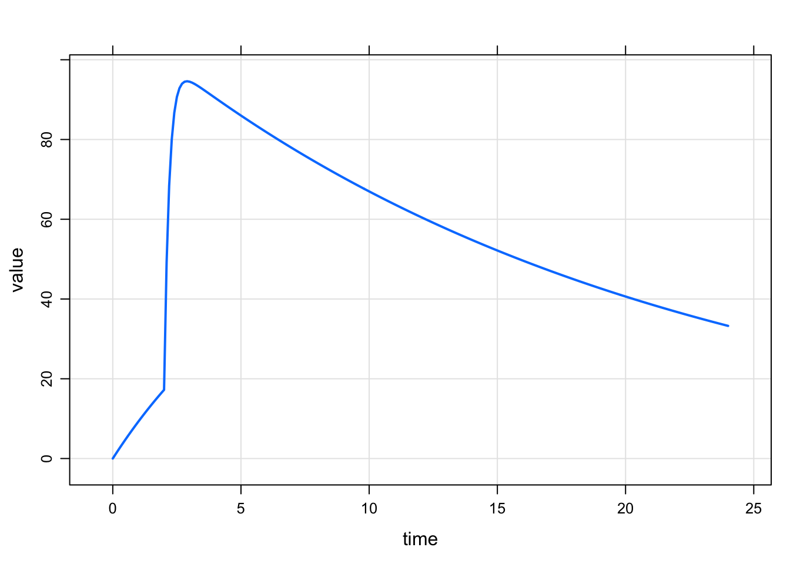
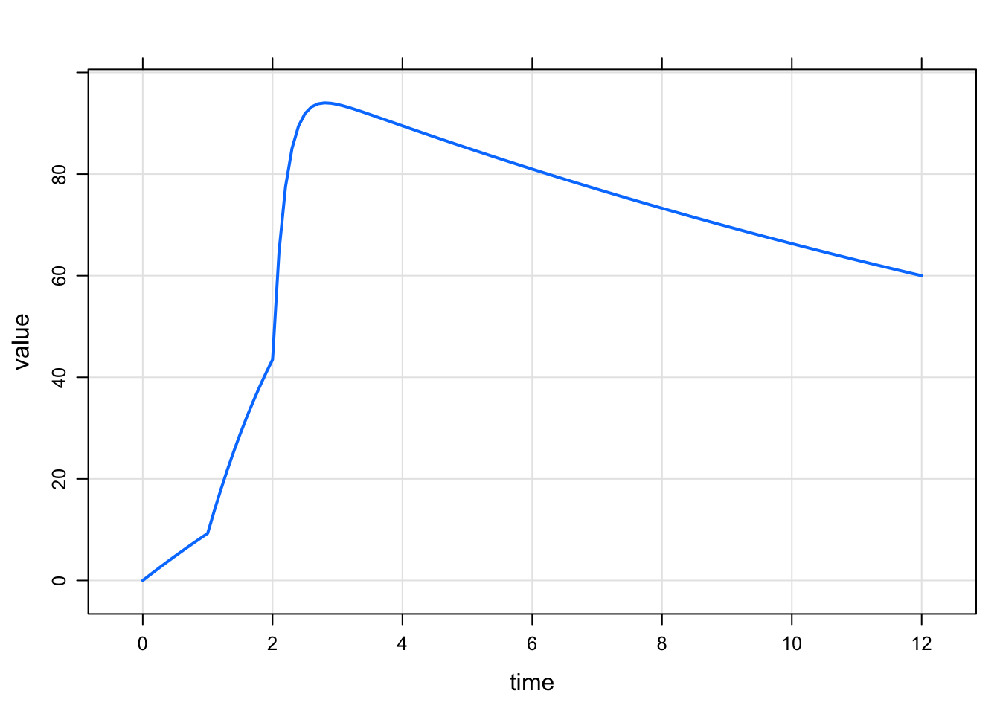
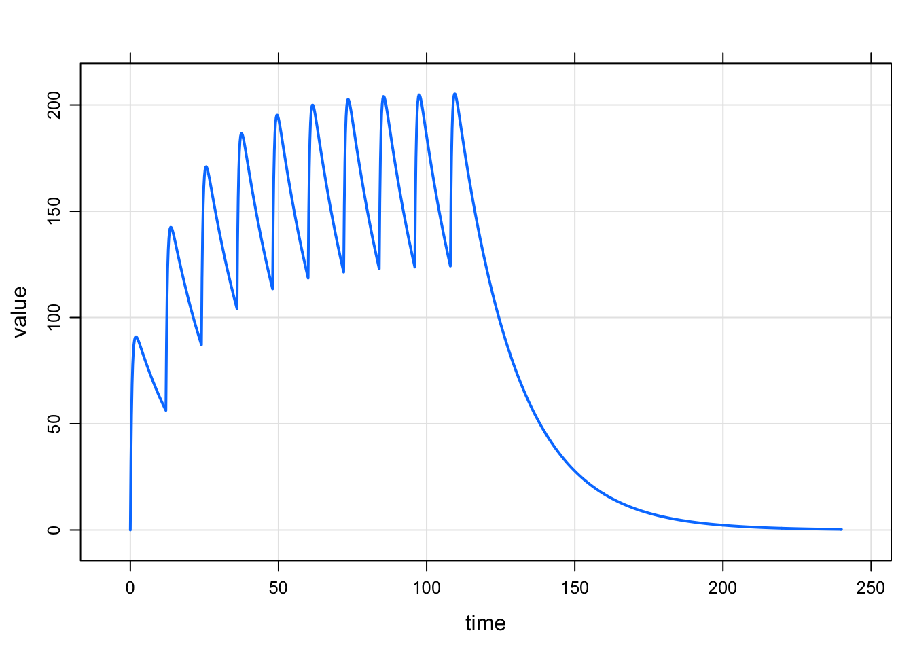

Introduction
This post is to introduce modeled interventions in mrgsolve. The main use case for this functionality is to force mrgsolve to advance the system to a specific time so that some aspect of the system can change at that time. This is similar to the MTIME functionality that NONMEM provides. Additionally, doses (bolus or infusions) can also be implemented as a modeled event. These events are “modeled” because they originate from code in the $MAIN block, not the input data set, so that the events can be reactive to model parameters or the state of the model itself.
Status
At the time of this post, this functionality is only in a development branch on the mrgsolve GitHub. But we’ve been working on and revising this concept for a while now, so hopefully it is more or less stable with a reasonable interface.
Example: time-varying KA
One common use case for modeled events are a time-varying model parameter such as an absorption rate constant. The model with constant KA looks like this
code <- '
$PARAM CL = 1, V = 20, KA1 = 0.1, KA2 = 0.5, KA3 = 5
$PKMODEL cmt = "GUT CENT", depot = TRUE
$PREAMBLE capture KA = KA1;
$MAIN
KA = KA2;
' library(mrgsolve)
mcode("mevent0", code) %>%
ev(amt = 100) %>%
mrgsim(end = 24, delta = 0.1) %>%
plot(CENT+KA~time)## Compiling mevent0 ... done.
In this example, we want KA to start at the time of the oral dose and then increase at some time after the dose. And we want that to happen for every dose. We implement that by modeling that time after the dose when we want KA to change and implement at that change point.
The model with time-varying KA might look like this
code <- '
$PARAM CL = 1, V = 20, KA1 = 0.1, KA2 = 0.5, KA3 = 5
$PKMODEL cmt = "GUT CENT", depot = TRUE
$PREAMBLE capture KA = KA1;
$MAIN
if(EVID==1) {
KA = KA1;
self.mevent(TIME + 2, 33);
}
if(EVID==33) KA = KA3;
' Whenever we see a dose (EVID==1), we set KA to the initial (slower) KA value and register a model event that (in this case) happens two hours later. We use EVID=33 for that event. This is a arbitrary choice (it could be [almost] anything). The idea here is that, when we see EVID==33 come along, we change the KA to the faster value. We don’t have plans to offer indicators like MPAST or MTDIFF as NONMEM does. But we can achieve similar behavior by tagging the event and then looking for that tag again down the road.
The simulation looks like this
mod <- mcode("mevent", code)## Compiling mevent ... done.mod %>%
ev(amt = 100) %>%
mrgsim(end = 24, delta = 0.1) %>%
plot(CENT+KA~time)
We can refine this even more with an additional intervention time for an intermediate value of KA
code <- '
$PARAM CL = 1, V = 20, KA1 = 0.1, KA2 = 0.5, KA3 = 5
$PKMODEL cmt = "GUT CENT", depot = TRUE
$PREAMBLE capture KA = KA1;
$MAIN
if(EVID==1) {
KA = KA1;
self.mevent(TIME + 1, 33);
self.mevent(TIME + 2, 34);
}
if(EVID==33) KA = KA2;
if(EVID==34) KA = KA3;
' The arguments for self.event() in this case are:
- time
- evid
We use a separate EVID here to distinguish the first change from the second change.
mod <- mcode("mevent2", code)## Compiling mevent2 ... done.mod %>%
ev(amt = 100) %>%
mrgsim(end = 8, delta = 0.1) %>%
plot(CENT+KA~time)
Now we have the two change points implemented.
Multiple doses would look like this
mod %>%
ev(amt = 100, ii = 24, addl = 2) %>%
mrgsim(end = 120, delta = 0.1) %>%
plot(CENT+KA~time)
And we can model this so that the change point is a function of a model parameter
code <- '
$PARAM CL = 1, V = 20, KA1 = 0.1, KA2 = 0.5, KA3 = 5
MTIME1 = 2
$PKMODEL cmt = "GUT CENT", depot = TRUE
$PREAMBLE capture KA = KA1;
$MAIN
if(EVID==1) {
KA = KA1;
self.mevent(TIME + MTIME1, 33);
}
if(EVID==33) KA = KA3;
' mod <- mcode("mevent3", code)## Compiling mevent3 ... done.idata <- data.frame(MTIME1 = seq(0,2.5,0.5))
mod %>%
ev(amt = 100) %>%
idata_set(idata) %>%
mrgsim(end = 8, delta = 0.1) %>%
plot(CENT+KA~time)
Example: modeled dosing events
In the previous example, we used the mevent call to to force the simulation to stop at the time we wanted the parameter to change. This was accomplished by an event object with EVID=2, which forces the simulation (and to the solver) to stop at the time of the event, reset, and then keep going (with the new model parameters).
We can also use this mechanism to implement actual doses like this
code <- '
$PARAM CL = 1, V = 20, KA = 2
$PKMODEL cmt = "GUT CENT", depot = TRUE
$MAIN
if(TIME/12 ==floor(TIME/12) && TIME < 120) {
self.mevent(TIME, 1, 1, 100, 0);
}
' The arguments for self.mevent() in this case are:
- time
- evid
- compartment
- dose amount
- rate (for infusions)
mod <- mcode("mevent4", code)## Compiling mevent4 ... done.mod %>% mrgsim(end = 240, delta = 0.2) %>% plot(CENT~time)
So here, we simulated without the data set and implemented the dosing from within the model. This isn’t the way you should be implementing dosing like this on a regular basis, but it shows how you can trigger doses from within the model based on what has gone on up to that point in the simulation.